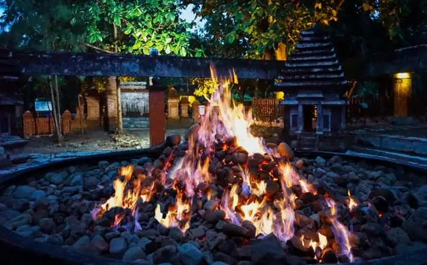
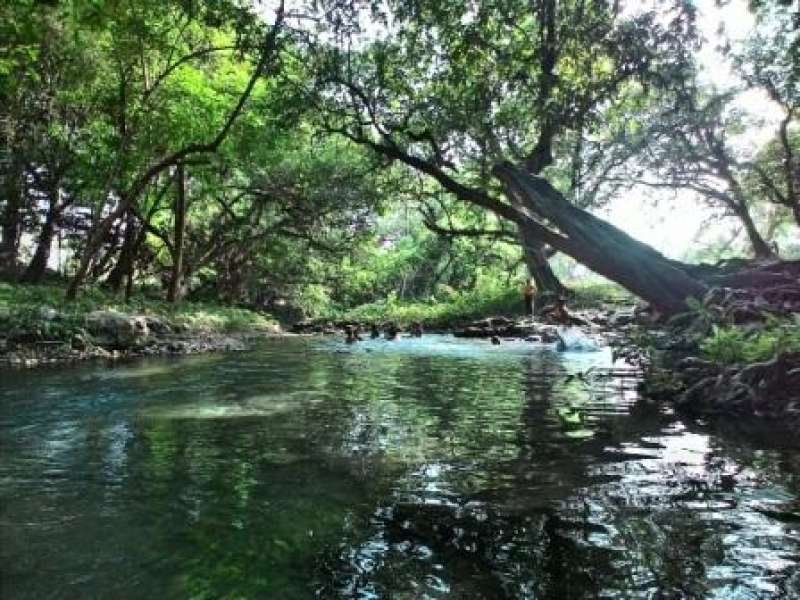
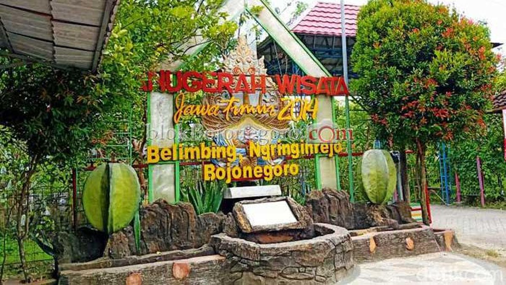
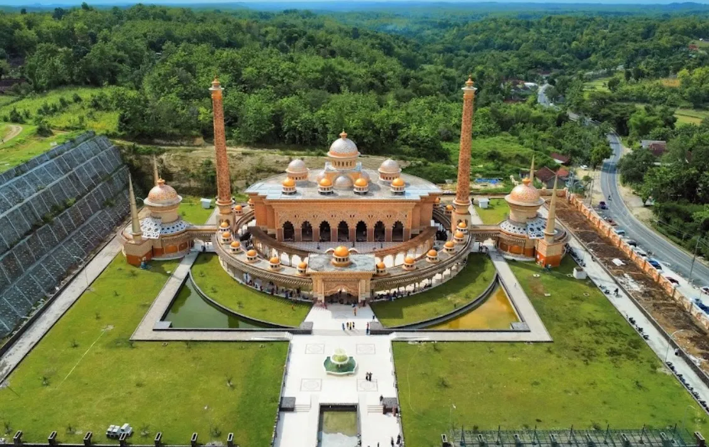

Kayangan Api adalah fenomena geologi berupa api yang tidak pernah padam. Kayangan Api terletak di Desa Sendangharjo Kecamatan Ngasem Kabupaten Bojonegoro
Bendungan Gerak merupakan bendungan bengawan solo yang kini digunakan sebagai pengelola air sehingga ketika musim kemarau tidak kekeringan. Bendungan Gerak berada di Desa Ngringinrejo Kecamatan Kalitidu Kabupaten Bojonegoro
Wisata yang dikenal dengan airnya yang jernih ini, berlokasi di Desa Ngunut, Kecamatan Dander, Kabupaten Bojonegoro. Wisata Growgaland dapat dijadikan salah satu destinasi yang wajib dikunjungi selama libur sekolah.
Berdiri sejak tahun 1984, terletak di Desa Ngringinrejo, Kecamatan Kalitidu, Kabupaten Bojonegoro, Agrowisata Kebun Belimbing telah berkembang dari sekadar kebun milik perorangan menjadi salah satu destinasi agrowisata unggulan di Jawa Timur.
Negeri Atas Angin Adalah wisata perbukitan untuk menikmati pemandangan dari ketinggian 853 mdpl yang terletak di Desa Deling, Kecamatan Sekar, Kabupaten Bojonegoro, Jawa Timur, 50 km dari pusat kota
Masjid An Nahdla adalah bangunan masjid yang bergaya timur tengah yang dipadu dengan ornamen Jawa yang terletak di Desa Sumberjo, Kecamatan Margomulyo, Kabupaten Bojonegoro, Jawa Timur
Dibuat oleh Kelompok 5 : Aditiya Bagus Pratama, Nur Afifatul Hidayah, Ratih Tantriasari, Sri Bahmiati